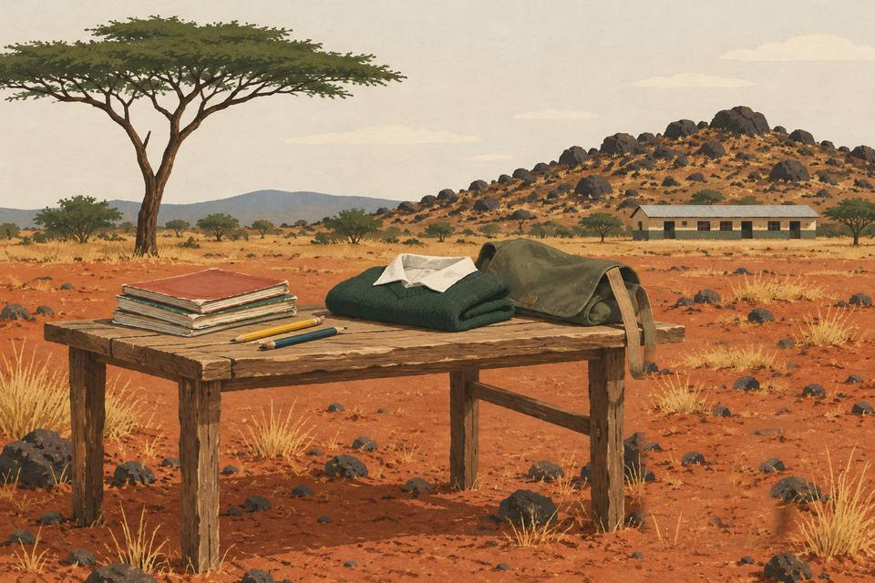
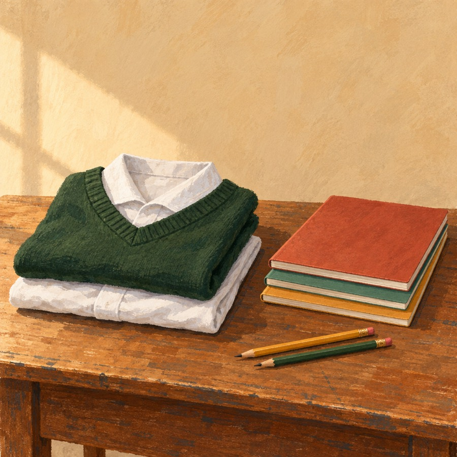
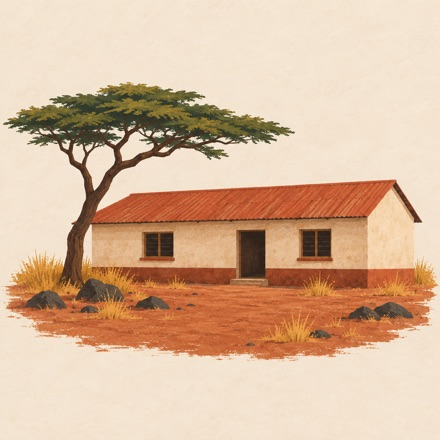

Demo page
Your picks, and what comes next.
First, where each of your thirteen picks now stands. Then eleven new ideas from a second, harder look at the site: some add, some refine, some replace. None of the new ones is on the real site. Say a letter to add it.
Eleven new ideas
Key dates for 2027
Every Kenyan parent and head teacher plans by opening day, half-term and closing day. A short list on the Our work page, with the next date picked out by itself.
From press reports of the Ministry of Education's 2027 calendar. The Ministry's own circular was not opened, so Cliffe should check these against a school's calendar.
Give by the term
In Kenya school costs come by the term, and schools are told to spread a year's fees 50, 30, 20. So the gift picker could lead with terms, in place of “Give monthly”.
The 50:30:20 split is from a press report of the 2026 fees notice for senior schools; the notice itself was not read.
Our service charter
Kenyan public bodies publish a service charter: what you can ask for, what you need, what it costs and how long it takes. A small one on the Impact page says “hold us to this” in a form every Kenyan knows.
| Service | What you need | Cost | How long |
|---|---|---|---|
| A receipt for your gift | Your M-Pesa message or bank slip | Free | placeholder working days |
| Term report | Nothing | Free | Within placeholder days of closing day |
| Answer to a question | An email or a call | Free | placeholder working days |
| Partner school enquiry | A letter from the head teacher or principal | Free | placeholder working days |
Give as a group
Kenyans often give together: a chama, a class, a congregation, a workplace. One line under “Ways to give” invites a group to use its own name, and the group sees itself thanked as one.
Type a name to see how the thank-you would read.
Reach us without data
About a third of phones on Kenyan networks are basic phones, and data costs money. A line in the contact block: call, send an SMS, or send a free “Please Call Me” and the Foundation calls back.
No data?
Call, text, or ask us to call you.
Send a Please Call Me to placeholder number and we will ring you back, Monday to Friday.
Please call me. Thank you.
QOP Hope Foundation: we have your message and will call you today.
“Sponsor a term” in place of “Sponsor a child”
The button says “Sponsor a child”, but the Sponsor page says gifts are pooled and no child is matched to a donor. A careful reader sees the gap. This wording says what really happens.
Every child deserves a future.
Sponsor a childFurther down the page: “To keep children safe, we don't publish individual profiles. Your gift supports students through our Education Fund.”
One quiet line in place of the colour stripe
The stripe under the top bar is blocks of red-brown, gold, green, black, white and blue. It reads as a beadwork band, and green, black, white and red sit side by side in it, which is close to the flag. One line in the site's own terracotta avoids both.
A wider mix in the drawings
Read as a set, the drawings lean one way: an umbrella acacia stands in most of them, and most of the women drawn wear a bead collar, in a county of many communities, most of it Muslim. Tap the ones you want redrawn (a classroom wall, a water point, a shop front, a mix of dress) and tell me the numbers.









None picked yet.
The line under the logo
“Queen of Peace” is a Catholic title, shown on every screen in a county where most families are Muslim, and the site does not yet say what the name means to Josephine. Until she does, the small line could simply say where the Foundation is.
The moon, when it is night in Isiolo
For half of every day the header is dark and empty. At night it could show the moon in tonight's true phase, so the page is alive for visitors abroad during their daytime.
In this demo the phase is real for today's date and the moon is simply centred. On the site it would also sit in its true place in the sky, like the sun.
The Foundation's own report form
Kenyan parents now read school reports in four levels: Exceeding, Meeting, Approaching or Below Expectation. The Impact page could grade the Foundation itself the same way each term, in place of a plain list of promises.
| What we promised | Level | Remarks |
|---|---|---|
| Every gift goes to the Foundation's own account | after Term 1, 2027 | |
| Fees paid straight to the school, with a receipt | after Term 1, 2027 | |
| Attendance and progress checked every term | after Term 1, 2027 | |
| Totals shared openly; children's details kept private | after Term 1, 2027 |
Levels: Exceeding, Meeting, Approaching, Below Expectation. Closing day: 9 April 2027. Next term opens: 3 May 2027.